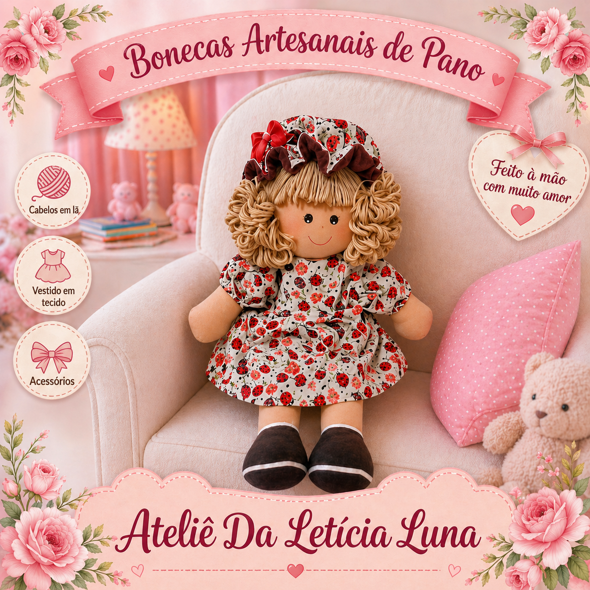

Bonecas Artesanais de Pano que Encantam e Marcam Vidas
Não é apenas uma boneca de pano. É um pedacinho de amor transformado em forma, criado para guardar memórias, aquecer corações e acompanhar momentos que nunca serão esquecidos.
Ver Produtos 🧸